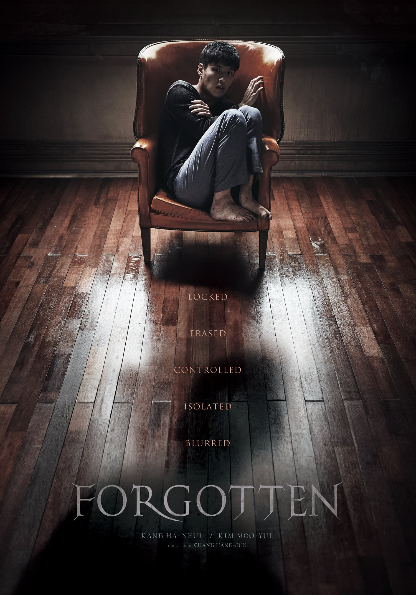

My Top 10 Favorite Movies
Deadpool

Armed with his new abilities and a dark, twisted sense of humor, Deadpool hunts down the man who nearly destroyed his life. Wade Wilson is a small-time mercenary. He meets Vanessa and falls in love. Life is idyllic until one day he is diagnosed with terminal cancer.
Eternals

Following the events of Avengers: Endgame (2019), an unexpected tragedy forces the Eternals, ancient aliens who have been living on Earth in secret for thousands of years, out of the shadows to reunite against mankind's most ancient enemy, the Deviants.
First daughter

'First Daughter' a boring child. Samantha Mackenzie (Katie Holmes) has to put up with her Secret Service detail despite her pleas for them to leave her alone while she's away at college in "First Daughter." "First Daughter" is all heart and has the best intentions in the world, but what a bore.
Forgotten
When his abducted brother returns seemingly a different man with no memory of the past 19 days, Jin-seok chases after the truth behind the kidnapping. When his abducted brother returns seemingly a different man with no memory of the past 19 days, Jin-seok chases after the truth behind the kidnapping.
Fractured

Fractured is more of a thriller than a horror, starring Sam Worthington (Avatar) as a man desperate to find his wife and child in a hospital that's determined to thwart him at every turn.
House of wax
 A group of teens are unwittingly stranded near a strange wax museum and soon must fight to survive and keep from becoming the next exhibit. Six friends are on their way to a football game. They decide to camp out for the night and continue driving the next day.
A group of teens are unwittingly stranded near a strange wax museum and soon must fight to survive and keep from becoming the next exhibit. Six friends are on their way to a football game. They decide to camp out for the night and continue driving the next day.
Kick ass

It tells the story of an ordinary teenager, Dave Lizewski (Aaron Johnson), who sets out to become a real-life superhero, calling himself "Kick-Ass".
Midnight Runners

Two friends who are students at Korean National Police University, find themselves in an endless race against time after they witness a kidnapping and decide to use their knowledge.
Shutter Island

In 1954, a U.S. Marshal investigates the disappearance of a murderer who escaped from a hospital for the criminally insane. In 1954, up-and-coming U.S. marshal Teddy Daniels is assigned to investigate the disappearance of a patient from Boston's Shutter Island Ashecliffe Hospital.
Texax Chainsaw Massacre

Picking up several decades after the original film, the story focuses on the serial killer Leatherface targeting a group of teens and coming into conflict with a vengeful survivor of his previous murders. The project is a joint-venture production between Legendary Pictures, Exurbia Films, and Bad Hombre.